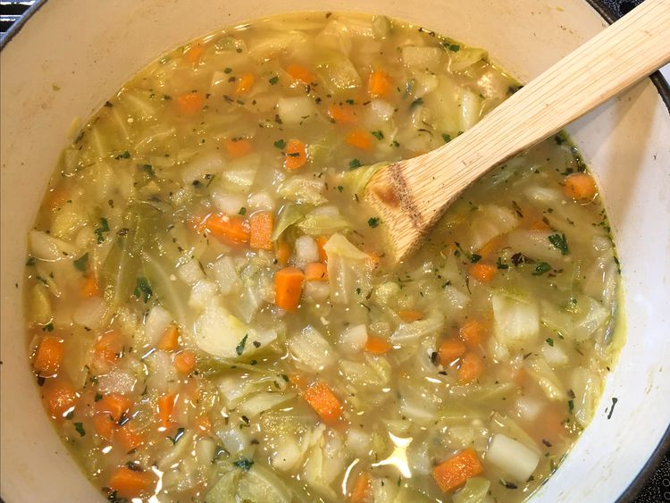

Home
Carrot, Potato, Cabbage Soup Recipe

Description
This carrot, potato, and cabbage soup is an extremely easy dish to make. It
freezes very well, so you can double or triple the recipe and keep it in the freezer.
Ingredients
- 4 large carrots, thinly sliced
- 2 large potatoes, thinly sliced
- 1 large onion, thinly sliced
- 1/4 medium head green cabbage, thinly sliced
- 2 cloves garlic, smashed
- 6 cups chicken stock
- 1 tablespoon olive oil
- 1 teaspoon salt
- 1 teaspoon dried parsley
- 1/4 teaspoon dried basil
- 1/4 teaspoon dried thyme
- ground black pepper to taste
Steps
- Combine carrots, potatoes, onion, cabbage, and garlic in a stockpot over
medium-high heat. Pour in chicken stock and olive oil, then season with salt,
parsly, thyme, basil, and pepper.
- Bring to a simmer and cook until carrots are tender, about 20 minutes. Transfer
to a blender in small batches and blend until smooth.